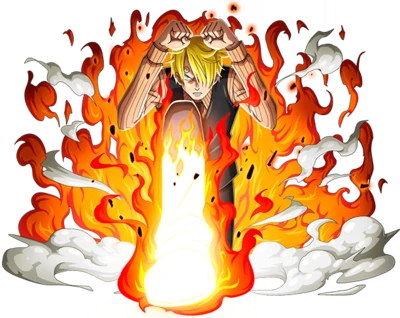

Personagens

Monkey D. Luffy
- também conhecido como Luffy Chapéu de Palha ou Chapéu de Palha, é um pirata e o protagonista do anime e mangá One Piece, Ele é o fundador e o capitão do cada vez mais infame e poderoso Piratas do Chapéu de Palha

Roronoa Zoro
- também conhecido como "Caçador de Piratas" Zoro, é o combatente dos Piratas do Chapéu de Palha e um ex-caçador de recompensas. Ele foi o primeiro membro a juntar-se à tripulação. Sua fama como mestre espadachim e sua grande força, juntamente com as ações de seu capitão

Vinsmoke Sanji
- também conhecido como "Perna Negra" Sanji, e também é o cozinheiro dos Piratas do Chapéu de Palha, assim como um antigo chefe de cozinha do Baratie. Ele também é o terceiro filho e a quarta criança da Família Vinsmoke, tornando-o um príncipe do Reino Germa
Usopp
- "God" Usopp é o Atirador dos Piratas do Chapéu de Palha. Ele é o quarto membro da tripulação e o terceiro a entrar, fazendo isso no final do Arco Vila Syrup. Embora ele tenha deixado a tripulação durante o Arco Water 7, ele se juntou novamente ao final do Arco Pós-Enies Lobby
Nami
- A "Gata Ladra" Nami é a navegadora dos Piratas do Chapéu de Palha. Ela foi o terceiro membro da tripulação e a segunda a entrar, fazendo-o durante o Arco Orange Town. Ela é a irmã adotiva de Nojiko, desde que as duas ficaram órfãs e foram levadas por Bell-mère.
Tony Tony Chopper
- Tony Tony Chopper é uma rena. Ele é o médico da tripulação dos Piratas do Chapéu de Palha. Chopper é uma rena que, após comer a Hito Hito no Mi, adquiriu a habilidade de se transformar e raciocinar como os humanos.Ele é o sexto membro e um dos poucos membros da tripulação
Nico Robin
- Nico Robin, também conhecida como "Criança Demônio" e "Luz da Revolução", é a arqueóloga dos Piratas do Chapéu de Palha. Ela é a única sobrevivente da ilha destruída de Ohara, localizada no West Blue. Como resultado, ela é atualmente a única pessoa no mundo com a capacidade de ler e decifrar Poneglyphs, uma habilidade que é considerada proibida e que ameaça o Governo Mundia
Franky
- Franky é o carpinteiro dos Piratas do Chapéu de Palha. Ele é um cyborg de 36 anos de Water 7 e foi introduzido na história como o líder da Família Franky, um grupo de desmantelamento de navios. Ele foi originalmente chamado de "Cutty Flam" até trocar seu nome original por seu apelido a pedidos de Iceburg para esconder sua identidade
Brook
- Brook é o Músico dos Piratas do Chapéu de Palha. Ele é um esqueleto que os Chapéus de Palha encontraram a bordo de um navio fantasma depois de entrarem no Triângulo Florian. Ele é um usuário de Akuma no Mi que comeu a Yomi Yomi no Mi, o que o torna um pseudo-imortal por causa de seus poderes. Ele é o nono membro do Bando do Chapéu de Palha, e o oitavo a se juntar à tripulação de Luffy
Jinbe
- "Cavaleiro do Mar" Jinbe é o timoneiro dos Piratas do Chapéu de Palha. Ele é o décimo membro da tripulação e o nono a se juntar, fazendo isso durante o Arco País de Wano. Jinbe é um homem-peixe sendo um tubarão-baleia e um poderoso mestre do karatê Homem-Peixe